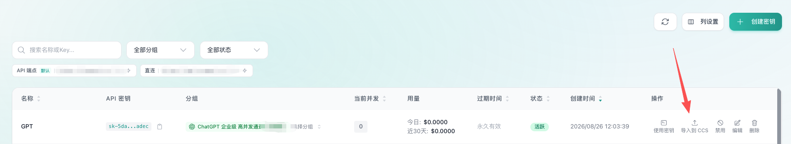
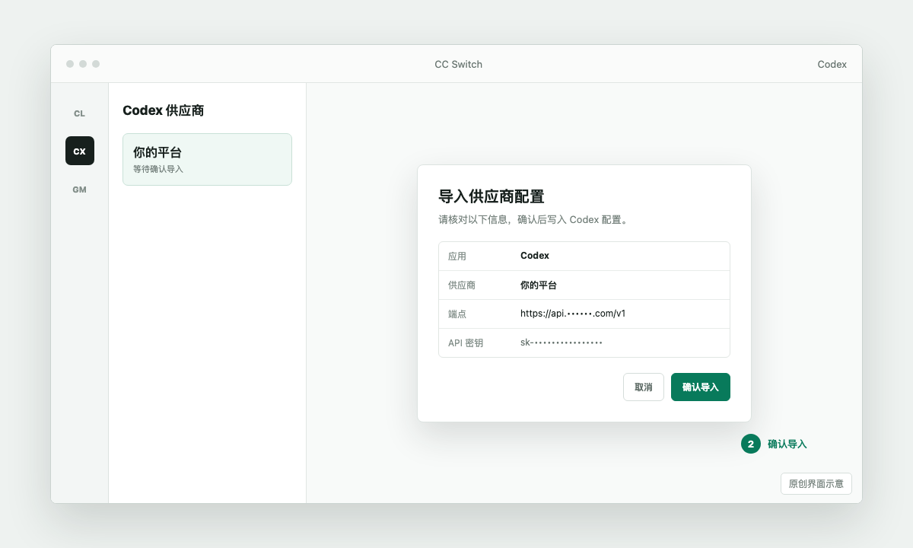
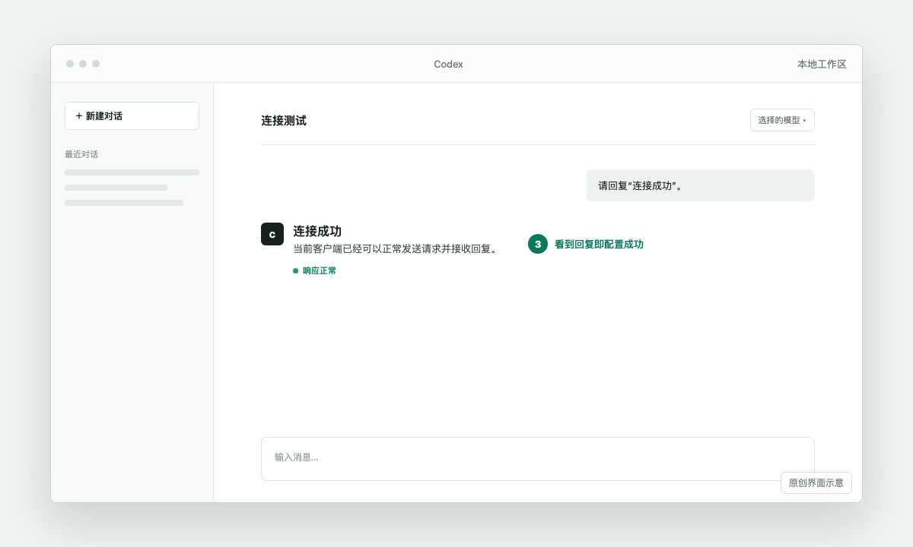
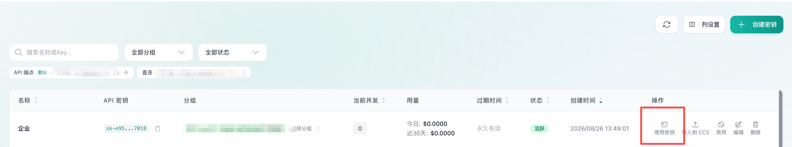
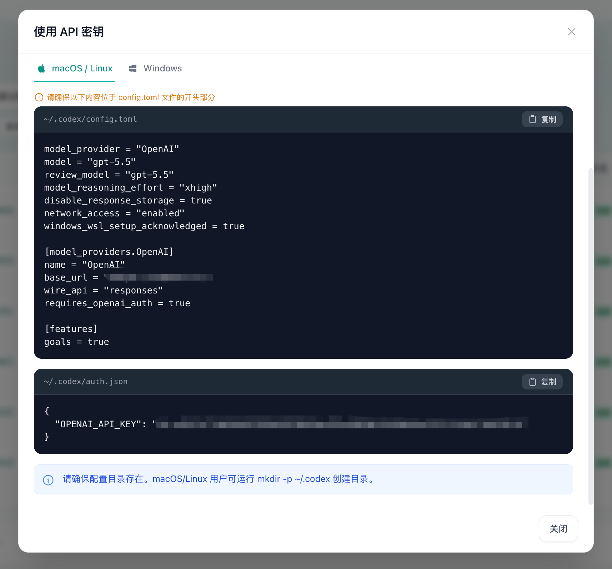
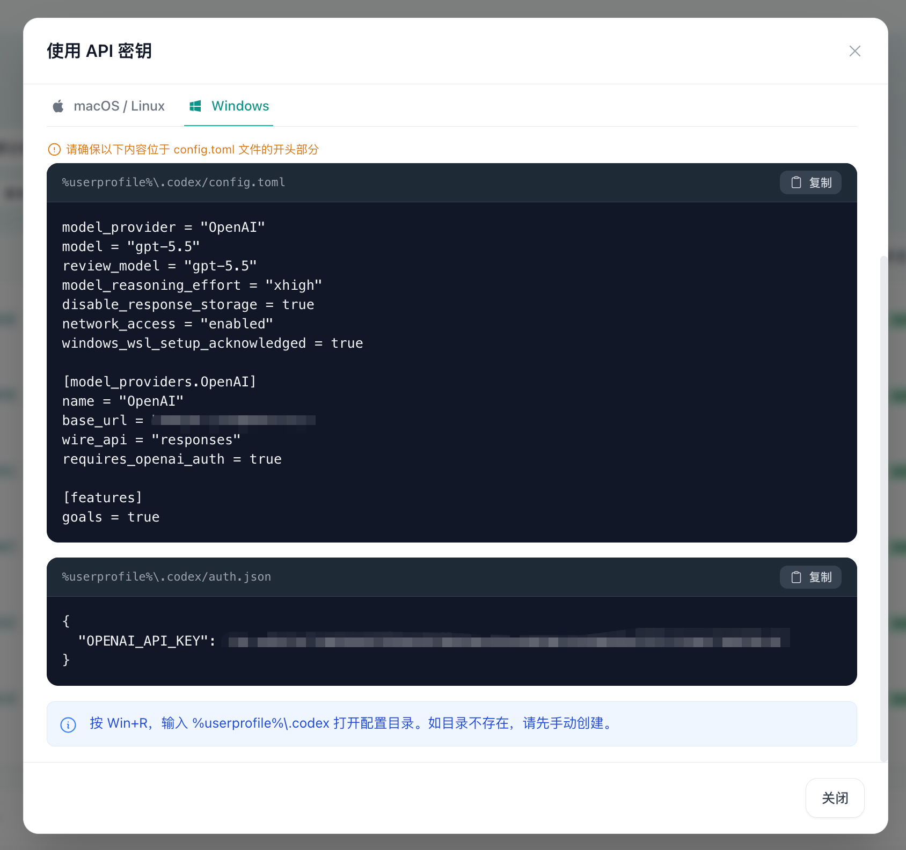

⊞
Windows资源管理器或 PowerShell
配置文件路径
%USERPROFILE%\.codex\config.toml
- 1
按 Win + R，粘贴
%USERPROFILE%\.codex，回车。 - 2
PowerShell 直接打开：
notepad "$HOME\.codex\config.toml"

快速开始
跟随下面的步骤，在 Windows 或 macOS 上完成安装、导入和连接测试。
推荐方式
密钥页会把当前密钥和接口配置交给 CC Switch。教程页面不需要你再次粘贴密钥，也不会接触密钥内容。
找到要使用的密钥，点击右侧“导入到 CCS”。
准备工具
需要安装 Codex 和 CC Switch。选择你的电脑系统后，使用对应的下载入口。
准备凭证
进入平台的密钥管理页面，新建一枚密钥。创建后，在对应密钥的操作栏点击“导入到 CCS”。
打开平台的密钥管理页面。
点击创建密钥，名称可填写“我的电脑”。
点击右侧导入到 CCS，不要再手动复制密钥。

写入配置
点击“导入到 CCS”后，浏览器会直接唤起 CC Switch。你只需要在 CC Switch 中确认导入。

浏览器询问是否打开 CC Switch 时，选择允许。
在导入确认窗口中核对应用为 Codex。
确认导入并启用刚添加的供应商。
完成
完全退出正在运行的 Codex，再重新打开。进入对话后选择平台支持的模型并发送测试消息。
如果模型列表暂时没有更新，关闭 Codex 后重新打开一次，再检查 CC Switch 中当前供应商是否已经启用。

快捷定位
需要手动查看或修改配置时，按你的系统使用下面任意一种方式打开 config.toml。
%USERPROFILE%\.codex\config.toml
按 Win + R，粘贴 %USERPROFILE%\.codex，回车。
PowerShell 直接打开：notepad "$HOME\.codex\config.toml"
~/.codex/config.toml
打开 Finder 的“前往”→“前往文件夹”，或按 ⌘ + ⇧ + G，输入 ~/.codex 后回车。隐藏目录也可以这样直接进入。
按 ⌘ + Space 搜索“终端”并回车，在终端输入 open ~/.codex，即可在 Finder 中打开隐藏目录。
想显示隐藏文件，在 Finder 按 ⌘ + ⇧ + .；终端直接编辑：open -e ~/.codex/config.toml
推荐备用方式
如果一键导入没有反应，可以直接在密钥页使用“使用密钥”，按系统复制配置文件内容。
在密钥列表找到要使用的密钥，点击操作栏的使用密钥。
切换到自己的系统标签页：macOS / Linux 或 Windows。
分别复制 config.toml 和 auth.json 两个代码框的完整内容。
按下方路径打开配置目录，粘贴并保存对应文件；目录不存在时先创建 .codex 文件夹。


配置目录：~/.codex；文件名必须分别是 config.toml 和 auth.json。
可按 ⌘ + Space 搜索“终端”，输入 open ~/.codex 打开目录。

配置目录：%USERPROFILE%\.codex；文件名必须分别是 config.toml 和 auth.json。
按 Win + R，输入 %USERPROFILE%\.codex 打开目录。
打开用户目录中的 ~/.codex/config.toml，加入下面的配置。接口地址和环境变量名称需要按平台文档调整。
model_provider = "custom"
[model_providers.custom]
name = "SolidAPI"
base_url = "https://your-solidapi-host/v1"
env_key = "SOLIDAPI_API_KEY"
wire_api = "responses"还需要设置 SOLIDAPI_API_KEY 环境变量。将下面命令中的占位文字替换为自己的密钥；Windows 设置后请重新打开终端。
[Environment]::SetEnvironmentVariable("SOLIDAPI_API_KEY", "你的 API 密钥", "User")export SOLIDAPI_API_KEY="你的 API 密钥"macOS 将命令写入 ~/.zshrc 后执行 source ~/.zshrc。模型名称以控制台和密钥“使用密钥”窗口生成的配置为准。
开始配置
Claude Code 是命令行工具。先安装 Node.js 18+，再把平台提供的 Claude 接口地址和密钥写入用户环境变量，之后新开的终端也能直接使用。
npm install -g @anthropic-ai/claude-code[Environment]::SetEnvironmentVariable("ANTHROPIC_BASE_URL", "https://your-solidapi-host", "User")
[Environment]::SetEnvironmentVariable("ANTHROPIC_AUTH_TOKEN", "你的 API 密钥", "User")关闭并重新打开终端，让新的用户环境变量生效。Git Bash 或 WSL 请在各自的 ~/.bashrc 中写入对应的 export 配置。
配置后运行 claude doctor 检查安装，再发送一条简单消息测试。
npm install -g @anthropic-ai/claude-codeexport ANTHROPIC_BASE_URL="https://your-solidapi-host"
export ANTHROPIC_AUTH_TOKEN="你的 API 密钥"将上面两行写入 ~/.zshrc，保存后运行 source ~/.zshrc；以后新开的终端会自动加载。
配置后运行 claude doctor 检查安装，再发送一条简单消息测试。
排查问题
先按错误提示快速检查，仍无法解决时再联系平台客服。
确认 CC Switch 已经安装并至少启动过一次。仍然无反应时，重新安装 CC Switch，以恢复 ccswitch:// 协议关联；也可以使用上面的手动填写方式。
重新复制完整密钥，检查前后是否带有空格，并确认密钥没有被删除、禁用或用完额度。
先在 CC Switch 中确认新供应商处于“已启用”状态，然后完全退出 Codex 并重新打开。
模型由平台按密钥权限提供。刷新后仍为空时，请检查密钥权限或向平台客服确认当前可用模型。
先确认接口地址是平台提供的完整地址，不要自行追加或删除路径；再检查模型名称、请求协议和客户端版本是否与平台说明一致。
通常是密钥没有对应分组权限、账户被禁用，或当前模型不在套餐范围内。换一个有权限的密钥测试，并向平台客服确认分组和模型权限。
检查端点是否复制完整，以及模型 ID 是否拼写正确。不要把其他客户端的路径直接套用到 Codex，按平台提供的 Codex 接入地址填写。
先暂停重复重试，查看平台余额、额度和限流提示。多个客户端同时使用同一密钥时，也可能更容易触发频率限制。
这类状态通常表示上游服务或中转线路暂时异常。等待几分钟后重试；如果持续出现，请把错误时间、模型名称和完整错误码发给平台客服，不要发送 API 密钥。
确认电脑可以访问接口域名，暂时关闭可能拦截请求的代理或安全软件后再试。长上下文或复杂任务也可能需要更长时间，请避免连续点击发送。
Codex 配置需要使用平台明确支持的协议。不要凭经验把 Chat Completions 地址改成 Responses 地址；请以平台提供的 Codex 专用配置为准。
模型名称必须使用平台实际开放的模型 ID。先在平台模型列表或公告中确认名称，再在 Codex 中选择；不要只根据网上教程填写旧模型名。
新建一个对话、减少一次发送的文件数量，或换用平台支持更大上下文的模型。长对话可以先让 Codex 总结，再继续后面的任务。
在 CC Switch 中确认供应商已经启用，然后完全退出 Codex（包括终端窗口）再重新打开。仍无效时，检查配置文件的修改时间和当前供应商端点。
先启动一次 Codex 或完成一次 CC Switch 导入，再按“配置文件”章节定位。macOS 的 .codex 默认隐藏，可以用 Finder 的“前往文件夹”直接输入 ~/.codex。
立即在平台密钥管理页禁用或删除旧密钥，再创建新密钥并重新导入。不要把包含密钥的导入链接发到群聊、工单或公开网页。
请提供操作系统、Codex/CC Switch 版本、发生时间、模型名称、HTTP 状态码和脱敏后的错误信息。请隐藏 API Key、邮箱、余额截图和完整导入链接。
先确认 Node.js 已安装，再重新打开终端。运行 node -v 和 npm -v 检查环境；安装完成后用 claude doctor 检查 PATH 和安装状态。
不要直接给 npm 命令加 sudo。macOS 可使用 Node.js 官方安装包或 Node 版本管理器后重试；Windows 请使用 PowerShell、Git Bash 或 WSL，并确认 Node.js 为 18 或更高版本。
确认 ANTHROPIC_BASE_URL 是平台提供的 Claude 接口地址，密钥没有空格且仍然有效。平台要求 Bearer 认证时使用 ANTHROPIC_AUTH_TOKEN；不要同时设置两个认证变量。
PowerShell 使用 $env:变量名=值，Git Bash/WSL 使用 export 变量名=值，两种写法不能混用。配置后在同一个终端运行 claude，不要只打开新的图形终端窗口。
不能直接混用。Codex 使用 ~/.codex/config.toml 与 auth.json，Claude Code 使用 ANTHROPIC_BASE_URL 等环境变量；请按对应章节配置各自的端点和密钥。
Claude Code 需要平台提供兼容 Anthropic Messages API 的端点。模型 ID 必须使用平台实际开放的名称；不要把 Codex 的 Responses 配置或模型名复制到 Claude Code。